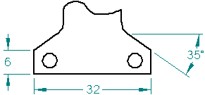
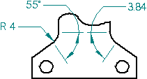
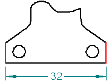
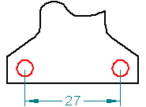

Smart Dimension command
Use the Smart Dimension command  to place a dimension on any single element, between any two elements, or between
elements on a sketch, a drawing, or a model. The dimension types that are available
depend on the elements you select.
to place a dimension on any single element, between any two elements, or between
elements on a sketch, a drawing, or a model. The dimension types that are available
depend on the elements you select.
When placing dimensions between drawing views, the views must share the same view plane and view rotation angle. For example, you can add a dimension between an edge in a front view and an edge in a detail view with the same front orientation, but not between a front view and a side view.
Dimensions placed on model geometry are PMI elements. For examples and additional information that are specific to placing dimensions on the model, see:
Selecting elements
You can use Smart Dimension command to place a dimension on the following single elements:
-
Length and angle of a line

-
Radius and diameter of a circle

-
Length, angle, radius, and diameter of an arc

-
Radius of an ellipse or curve

You can also place a dimension between any two elements, such as:
-
Between two linear elements

-
Between two circular elements

Using keyboard options
Before you click to place the dimension, you can use the following keys to affect the dimension that is created. The options that are available depend upon what, and how many, elements you select. Refer to the specific prompts displayed on PromptBar as you select elements.
|
Keyboard options |
Result |
|
A |
Changes between a linear dimension and an angular dimension. |
|
B |
For PMI, changes the dimension orientation back to the previous dimension plane in sequence. |
|
D |
Changes between a radial dimension and a diameter dimension. |
|
I |
For PMI, selects an intersection point. |
|
N |
For PMI, changes the dimension orientation to the next dimension plane in sequence. |
|
Shift |
For linear dimensions, alternates between:
|
|
T |
Places a tangent distance dimension between two arcs, ellipses, or curves. |
|
Alt |
For a radial or diameter dimension, adds a projection line extension to the dimension.
|
|
Q |
Turns automatic locate off and on so you can select a different element to dimension to. |


Specifying dimension format and appearance
Use the options that are available on the Smart Dimension command bar to specify dimension format and appearance before you place the dimension.
-
Place a fit dimension by first selecting Class from the Dimension Type list, and then selecting the class fit dimension type from the Type list.
-
Specify additional dimension text or symbols by selecting the Prefix button to open the Dimension Prefix dialog box.
-
Adjust the round-off of all dimensions and tolerance values by selecting the Advanced Round-off button to open the Round-off dialog box.
You can use the Properties command to open the Dimension Properties dialog box to specify other aspects of dimension formatting. For example, you can specify the length and size of dimension lines and projection lines (on the Lines and Coordinate tab), and the gap between the dimension text and the dimension line (on the Spacing tab).
How do I
Example: Dimension the length of a lineExample: Dimension the diameter of a circle
Dimension similarly sized holes
Example: Dimension a curved slot
Place concentric diameter dimensions
Place a feature callout dimension
Place a 3D dimension on a pictorial drawing view
Define smart feature properties in the Dimension style